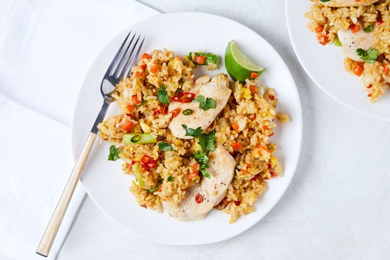

Thai Fried Rice

Description
An authentic recipe for Thai fried rice – just like you get in Thailand and at Thai restaurants!
Make this with shrimp/prawns, chicken or any protein you wish
Ingredients
- 2 tbsp vegetable oil (or canola or peanut oil)
- 2 large garlic cloves , very finely chopped
- 1/2 onion , diced
- 5 oz / 150 g small prawns/shrimp (cooked or raw) , or chicken breast thinly sliced (Note 1)
- 3 green onion (shallots) , cut into 1.5 "/4 cm pieces
- 2 eggs , lightly beaten
- 3 cups cooked jasmine rice , cold (preferably refrigerated overnight)
Steps
- Heat oil in a large wok or a large skillet over medium high heat. (Add 1 tbsp extra oil if using a skillet)
- Add garlic and onion, stir fry for 30 seconds.
- Add prawns/shrimp and white part of green onion, stir fry for 1 minute.
- Push everything to the side and pour the egg onto the other side. Scramble it quickly - about 20 seconds.
- Add the rice and Sauce of choice. Stir fry for 2 minutes, adding green part of green onions halfway through, until all the rice is coated with the Sauce.
- Serve immediately, garnished with fresh cilantro/coriander with tomato and cucumbers on the side. (See in post for more serving ideas)